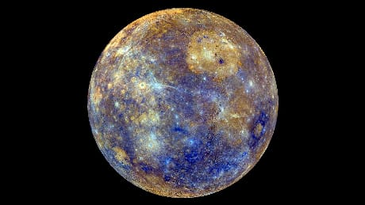
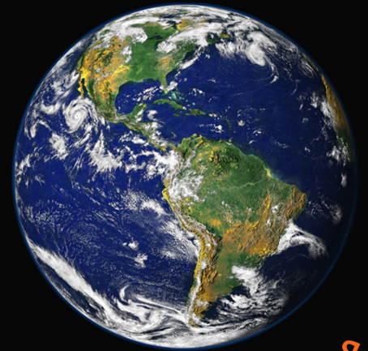
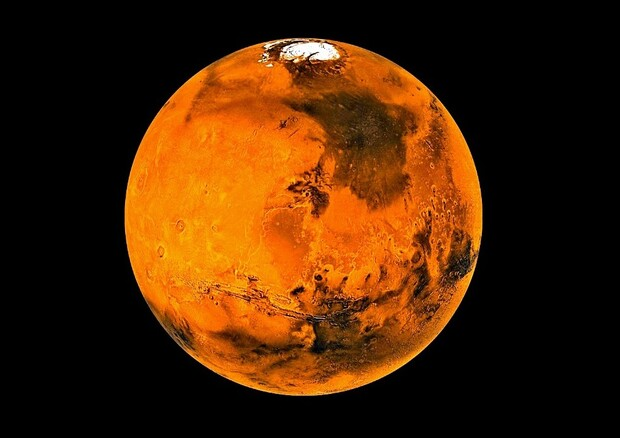

1.
Mercurio:
E' il pianeta più vicino al Sole e il più piccolo del sistema solare. Ha una superficie fortemente craterizzata, una temperatura diurna che può raggiungere i 430°C e una notturna che può scendere fino a -180°C. Chiaramente non abitabile

2.
Venere:
è il secondo pianeta del sistema solare ed è spesso chiamato "pianeta gemello della Terra" per le sue dimensioni e la sua massa simili. Tuttavia, la sua superficie è completamente diversa dalla Terra, essendo coperta da nuvole dense e tossiche che rendono impossibile osservare la sua superficie dalla Terra. La temperatura superficiale di Venere è estremamente alta, con un massimo di circa 460°C.

3.
Terra:
è il terzo pianeta dal Sole e il nostro pianeta di casa. La Terra è l'unico pianeta del sistema solare che sappiamo essere in grado di sostenere la vita grazie alla sua atmosfera ricca di ossigeno e alla presenza di acqua liquida in superficie.

4.
Marte:
è il quarto pianeta dal Sole e il primo dei pianeti esterni. Ha una superficie simile alla Terra, con canyon profondi e vulcani estinti, ma la sua atmosfera sottile e la mancanza di acqua liquida rendono la vita sulla sua superficie estremamente difficile.
